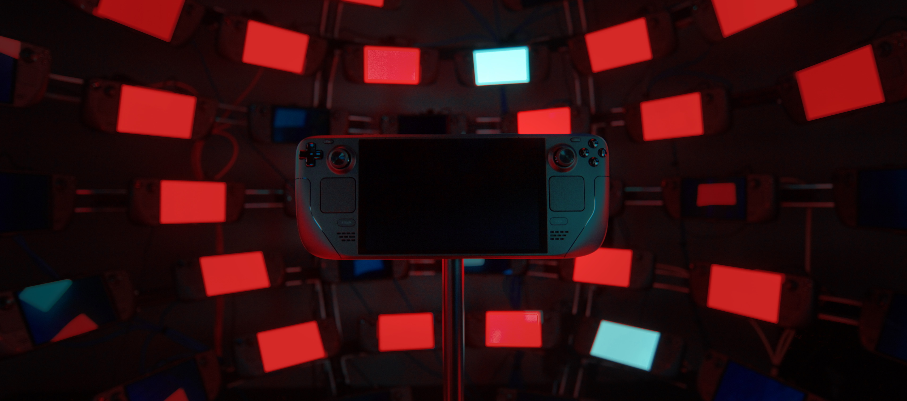

Evolution.
The history of handheld gaming, preserved for the future of gaming. From 8-bit bricks to high-performance hybrids.

The Portable Revolution.
Handheld gaming isn't just about playing on the go; it's about the engineering marvels that shrunk entire worlds into the palm of your hand.
- 1989: The rise of the 8-bit era with the Game Boy™.
- 2004: The dual-screen and high-fidelity shift.
- 2017: The hybrid console era begins with Nintendo Switch®.
- Today: The birth of the Handheld PC revolution.
Physical Roots.
Explore the devices that defined portable play, from the DMG-01 to the modern hybrids. Every button press is a piece of history.
Explore Hardware →Why Preservation Matters.
Hardware eventually fails. Batteries bloat, screens rot, and capacitors leak. By documenting these systems and utilizing modern emulation, we ensure that the art of gaming remains playable for decades to come. Preservation is the bridge between nostalgia and the future.
Digital Freedom.
Learn how emulation keeps these classics alive on modern hardware with enhanced visuals.
Learn More →Open Ecosystems.
Dive into the custom firmware and community-driven operating systems that power your play.
View Systems →The Chronicle.
Experience history in motion with our curated video archive and hardware analysis.
Watch Now →